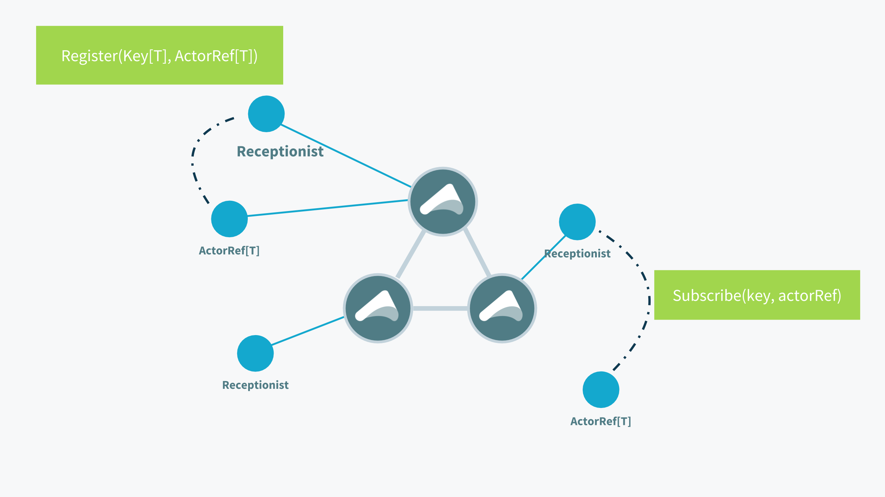
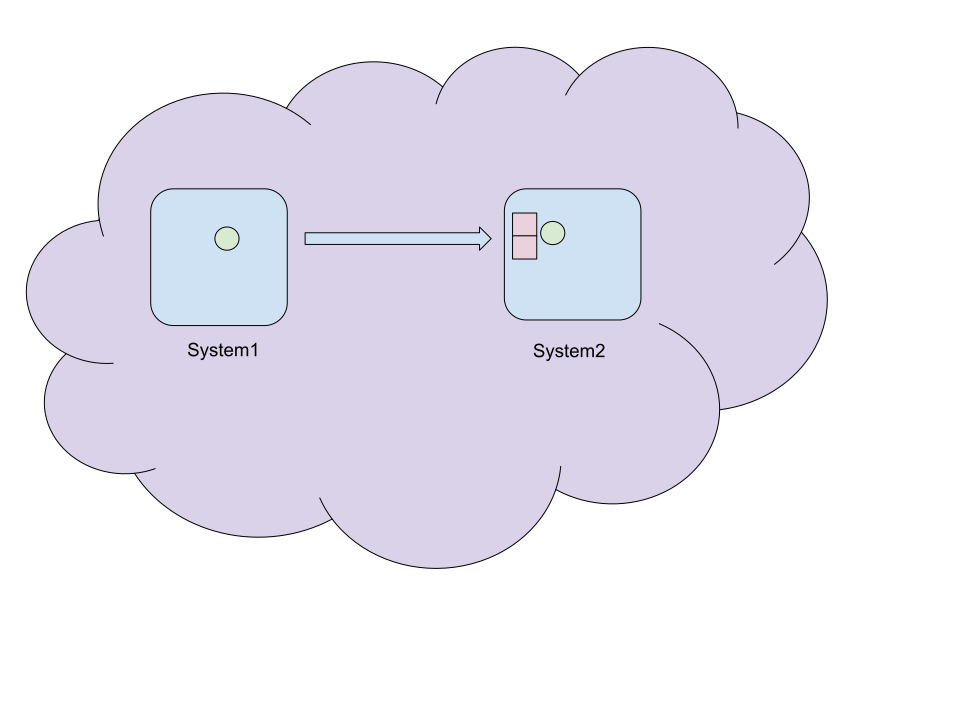

State of Akka
Christopher Batey (@chbatey)
Software Engineer - Akka team
Akka toolkit
Actor model
Clustering
Persistence (Event Sourcing)
HTTP
Streams
New in Akka
Typed refinements
Multi DC
gRPC
Artery TCP
Stream Refs
Akka Typed
sealed trait LockProtocol
final case object Lock extends LockProtocol
final case object Unlock extends LockProtocol
sealed trait LockStatus
final case object Granted extends LockStatus
final case class Taken(who: ActorRef) extends LockStatusclass MutableActor extends Actor with ActorLogging {
private var owner: Option[ActorRef] = None
def receive: Receive = {
case Lock if owner.isEmpty =>
owner = Some(sender())
sender() ! Granted
case Lock =>
sender() ! Taken(owner.get)
case Unlock =>
require(owner.contains(sender()))
owner = None
}
}class BecomeActor extends Actor {
private val unlocked: Receive = {
case Lock =>
sender() ! Granted
context.become(locked(sender()))
}
private def locked(who: ActorRef): Receive = {
case Lock =>
sender() ! Taken(who)
case Unlock =>
require(sender() == who)
context.become(unlocked)
}
override def receive: Receive = unlocked
}Akka Typed
ActorRefbecomesActorRef[T]- No more Actor trait
- No more
sender() - No more
actorSelection
Akka Typed
- Send 0+ messages
- Spawn 0+ children
- Change its behavior
sealed trait LockProtocol
case class Lock(ref: ActorRef[LockStatus]) extends LockProtocol
case class Unlock(ref: ActorRef[LockStatus]) extends LockProtocolsealed trait LockStatus
case object Granted extends LockStatus
case class Taken(who: ActorRef[LockStatus]) extends LockStatus
case object Released extends LockStatus
case object UnlockFailed extends LockStatusdef locked(by: ActorRef[LockStatus]): Behavior[LockProtocol] =
Behaviors.receiveMessage[LockProtocol] {
case (Lock(who)) =>
who ! Taken(by)
Behaviors.same
case (Unlock(who)) =>
require(who == by)
who ! Released
unlocked
}val unlocked: Behavior[LockProtocol] =
Behaviors.receiveMessagePartial[LockProtocol] {
case (Lock(who)) =>
who ! Granted
locked(who)
}
Receptionist
ActorRef[Receptionist.Command]
case class Find[T] (...) extends Command
case class Subscribe[T] (...) extends Command
case class Listing[T](...) extends Command
val topLevel = Behaviors.setup[NeedsLock] { ctx =>
val lock = ctx.spawn(unlocked, "lock-a")
ctx.system.receptionist !
Register(ServiceKey[LockProtocol]("lock-a"), lock)
needsLockInstance
}Ask
initialCtx.ask(initialCtx.system.receptionist)(Find(key)) {
case Success(listing) if hasListing(key, listing) =>
LockActorAvailable(listing.serviceInstances(key).head)
case _ =>
LockNotAvailable
}
def ask[Req, Res](
otherActor: ActorRef[Req])
(createRequest: ActorRef[Res] ⇒ Req)
(mapResponse: Try[Res] ⇒ T)
val needsLockInstance = Behaviors.setup[NeedsLock] { initialCtx =>
val key = ServiceKey[LockProtocol]("lock-a")
initialCtx.ask(initialCtx.system.receptionist)(Find(key)) {
case Success(listing) if hasListing(key, listing) =>
LockActorAvailable(listing.serviceInstances(key).head)
case _ =>
LockNotAvailable
}Behaviors.receive[NeedsLock] {
case (ctx, LockActorAvailable(lockActor)) =>
ctx.log.info("Lock actor is available, time to get it")
ctx.ask(lockActor)(Lock) {
case Success(l) => LockGranted
case Failure(t) => LockNotAvailable
}
needsLockGrant
case (ctx, LockNotAvailable) =>
ctx.log.info("Oh noes, no lock actor")
Behaviors.stopped
}Running
val system = ActorSystem(topLevel, "TopLevel")Persistence
Persistence
case class Command(data: String)
case class Event(data: String)
case class State(events: List[String] = Nil)
val behavior: Behavior[Command] =
PersistentBehaviors.receive[Command, Event, State](
persistenceId = "abc",
initialState = State(),
commandHandler = (ctx, state, cmd) ⇒ ???,
eventHandler = (state, evt) ⇒ ???)
Command Handler
val commandHandler: CommandHandler[Command, Event, State] =
CommandHandler.command {
case Cmd(data) ⇒ Effect.persist(Evt(data))
}
- Persist
- PersistAll
- Stop
- Unhandled
Event Handler
val eventHandler: (State, Event) ⇒ (State) = {
case (state, Evt(data)) ⇒ state.copy(data :: state.events)
}
Persistence
- Automatic snapshotting e.g every 100 events
- Typed event adapters
- Tagging without an event adapter
Typed
- Coexistence
- Signals e.g. PostStop
- New test kits
- Streams
Multi DC
Running Akka cluster across DCs
Multi DC
Membership management during partitions
Singletons and sharding
Distributed data

Sharding and singletons
Data Center A
cluster.multi-data-center.self-data-center = "a"val clusterSingleton = ClusterSingleton(system)val singleton: ActorRef[CounterCommand] =
clusterSingleton.spawn[CounterCommand](TypedCounter.counter(0),
"cat-counter",
Props.empty,
ClusterSingletonSettings(system),
GoodByeCounter)singleton ! Increment
singleton ! Increment
val count: Future[Int] = singleton ? GetValueData Center B
cluster.multi-data-center.self-data-center = "b"val proxy = clusterSingleton.spawn[CounterCommand](
TypedCounter.counter(0),
"cat-counter",
Props.empty,
ClusterSingletonSettings(system)
.withDataCenter("a")
,
GoodByeCounter
)proxy ! Increment
proxy ! Increment
val count: Future[Int] = proxy ? GetValueArtery
Artery
- Aeron based artery is UDP based
- New TCP Artery uses Streams TCP
- Supports TLS
Artery advantages
- Control message stream
- Large message stream
- Mostly allocation free
- Built in flight recorder
Stream refs
Reactive streams over the network


val source = Source(1 to 100)
val sourceRef: Future[SourceRef[Int]] =
source.runWith(StreamRefs.sourceRef())SourceRef
trait SourceRef[T] {
def source: Source[T, NotUsed]
}
streamRef.runWith(Sink.foreach(println))Under the hood
- Message ordering
- Demand propagation
- Subscription timeouts
Akka gRPC

service GreeterService {
rpc SayHello (HelloRequest) returns (HelloReply) {}
rpc ItKeepsTalking (stream HelloRequest) returns (HelloReply) {}
rpc ItKeepsReplying (HelloRequest) returns (stream HelloReply) {}
rpc StreamHellos (stream HelloRequest) returns (stream HelloReply) {}
}new StreamObserver[T]() {
override def onNext(summary: T): Unit = { ... }
override def onError(t: T): Unit = { ... }
override def onCompleted(): Unit = { ... }
}
Unary calls
rpc SayHello (HelloRequest) returns (HelloReply) {}def sayHello(in: HelloRequest): Future[HelloReply] =Client streaming
rpc ItKeepsTalking (stream HelloRequest) returns (HelloReply) {}def itKeepsTalking(in: Source[HelloRequest, NotUsed]):
Future[HelloReply] = {
in.runWith(Sink.foreach(println))
.map(_ => HelloReply("I have read your stream"))
}Server streaming
rpc ItKeepsReplying (HelloRequest) returns (stream HelloReply) {}override def itKeepsReplying(in: HelloRequest):
Source[HelloReply, NotUsed] = {
Source(List(HelloReply(s"Hello"), HelloReply(s"Hello ${in.name}")))
}Stream both ways
rpc StreamHellos (stream HelloRequest) returns (stream HelloReply) {}override def streamHellos(in: Source[HelloRequest, NotUsed]):
Source[HelloReply, NotUsed] = {
in.map(hr => HelloReply(s"Hello ${hr.name}"))
}val service: HttpRequest => Future[HttpResponse] =
GreeterServiceHandler(new GreeterServiceImpl(mat))Http2().bindAndHandleAsync(service, "127.0.0.1", 8080, HttpConnectionContext(http2 = Always))
.foreach { binding =>
println(s"gRPC server bound to: ${binding.localAddress}")
}val client = new GreeterServiceClient(new GrpcClientSettings(
"127.0.0.1",
8080
))val response: Future[HelloReply] =
client.sayHello(HelloRequest("chbatey"))val clientStreaming: Future[HelloReply] =
client.itKeepsTalking(Source(List(
HelloRequest("chbatey"),
HelloRequest("trevor"))))val streamedResponse: Source[HelloReply, NotUsed] =
client.streamHellos(???)
streamedResponse.runWith(Sink.foreach(println))gRPC Summary
- Very new!
- HTTP2 only works with bindAndHandleAsync
- Client uses Netty, will use Akka HTTP client soon
Summary
- Typed refinements
- Multi DC
- Artery TCP
- Stream Refs
- gRPC
Happy hAkking!
- Slides & Code
- github.com/chbatey/akka-talks
- Docs & QuickStarts
- akka.io, developer.lightbend.com/start
- Community
- gitter.im/akka/akka
- Tweet
- @akkateam, @chbatey
Questions?
Scala